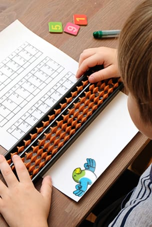
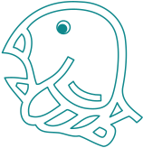
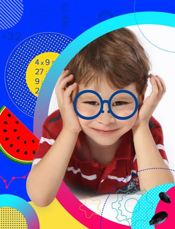

Вводная секция | развивающие программы в детском центре «СТАРТ».
Ментальная арифметика
Хотите развивавать логическое мышление и творческие способности у вашего малыша? Тогда детский центр «Старт» может стать для него отправной точкой для мотивации двигаться и расти! Здесь дети получают много знаний и навыков.
Детская школа ментальной арифметики в Красноярске, в Северном.
Хотите, чтобы ваш ребенок научился легко и быстро считать в уме и не только? Мы подготовили для вас топ-10 ответов на часто задаваемые вопросы. Надеемся, что эта статья поможет сделать выбор в пользу занятий ментальной арифметикой.
Содержание:
Что такое менальная арифметика
Что это такое
Ментальная арифметика — древняя методика быстрого счета на специальных счетах, которые, как говорят, придумали в древнем Китае, ей также пользовались в Древней Греции, Риме и Индии.
На самом деле старинными счетными досками-абаками пользовались по всему свету, их точное происхождение неизвестно. А латинский суффикс появился уже поздне, с ним, как известно, любое слово звучит весомее.
Абак (абакус) — древние счеты с пятью косточками на спицах появились более 3000 лет назад и используются до сих пор для вычислений на занятиях.
Со скольки лет заниматься менальной арифметикой?
Со скольки лет
Ментальная арифметика подходит для всех детей от 4,5 лет без исключения. Она не только дает ребенку навыки быстро считать в уме прямым и обратным счетом, складывать числа, вычитать, но и помогает полноценному развитию ребенка.
Учим математике с улыбкой
Из чего состоит методика абакус
Как это работает
Из чего состоит методика абакус? Сначала дети учатся считать на настоящем абаке — специальных счетах (соробан, абакус). В процессе занятий у детей развивается активно мелкая моторика рук, тренируется навык выполнять действия не ведущей рукой. Потом дети начинают считать ментально — счеты убирают и ребенок, представляя в уме счеты, может производить с ним те же операции, что и с настоящими.
Навык быстро вычислять в уме — далеко не конечный результат. В момент, когда ребенок уже не работает с реальными счетами-абакус, правое полушарие мозга начинает работать активнее. Оно отвечает за концентрацию внимания и воображение, распознает сложные визуальные и звуковые образы.
В это же время ребенок развивает счет и логическое мышление, за которые отвечает левое полушарие. Можно сказать, что ментальная арифметика помогает комплексному развитию детского интеллекта — ведь когнитивные способности ребенка зависят от развития двух полушарий мозга.
Почти как маленькое чудо — захватывающий процесс наблюдения на занятиях: двигая в воздухе невидимые костяшки, малыши, многие из которых дошколята, смалывают длинные ряды двухзначных и даже трехзначных чисел и за считанные секунды дают правильный ответ.
Несомненно, ребенку потребуется развить объём оперативной памяти для удержания в уме большого количества промежуточных результатов вычислений. А долговременная память будет развиваться из-за большого количества дополнительных упражнений.
Методика абакус не простая техника вычислений, требующая сосредоточенности и усидчивости. С самого первого занятия дети, которые хотят овладения навыками такого счета, учатся еще терпению и упорству.
Считай быстро, мысли ярко

Есть ли у преподавателей специальное образование?
Преподаватели
Есть ли у преподавателей специальное образование? Мы является официальным представителем международной школы по ментальной арифметике «Абакус- центр». Преподаватели центра проходят стажировки и обучение у московских специалистов.
Наши дети принимают участие в международных олимпиадах и занимают там также и призовые места. Мы работаем по выверенным на опыте программам и методикам обучения.
Как проходят занятия?
Занятия
Занятия проходят в спокойной, непринужденной обстановке в микро-группах 1,5 часа или индивидуально 1 час. Группы не более 4-6 детей. Переменки в игровой комнате или на улице с преподавателем.
После занятия выдаются домашние задания для закрепления полученных знаний (выполняются не только в онлайн-платформе).
Стоимость группового занятия 900 рублей, индивидуального 1100 рублей.
Инвестиции в будущее
Инвестиции
Я слышу и забываю. Я вижу и запоминаю. Я делаю и понимаю.
КОНФУЦИЙ, китайский древний мыслитель и философ.
Как нельзя лучше Конфуций выразил в лаконичной форме сущность способностей человека.
Чтение и просмотр очень важны для развития потенциала нашего мозга, но наибольшую пользу приносят действия.
И в ментальной арифметике стабильный результат дают постоянные занятия. Тренированный мозг легче будет воспринимать информацию, осваивать новые предметы в школе. В дальнейшем это несомненно скажется на способности ставить перед собой и решать серьезные задачи во взрослой жизни.
Почему стоит заниматься у нас?
Преимущества

Почему стоит заниматься у нас?
Мы являемся официальным представителем международной школы «Абакус».
Наши преподаватели проходят обучение и стажировку в Московском филиале школы.
Занятия проходят на портале «Абакус-центра».
Какая польза от ментальной арифметики?
Какая польза
Восприятие, внимание, память, мышление, воображение, речь — это когнитивные навыки — то есть базовые способности. Почему их надо развивать у ребенка? При отсутствие этих навыков, придя в школу, ребенок зачастую не испытывает интерес к учебе, считая ее скучной и сложной.
Когнитивные навыки обеспечивают успех в школьной учебе. Именно поэтому очень важно сформировать их у вашего ребенка до школы.
Ментальная арифметика развивает мышление, память, внимательность… Такие занятия позитивно будут влиять на способности к обучению в школе, особенно если ребенок не очень внимателен, так как они требуют особой концентрации, благодаря которой ребенок учится удерживать внимание.
К тому же на занятиях формируется навык трудиться — без него в жизни очень трудно чего-то достичь.
Еще один плюс: целеустремленная компания сверстников на занятиях в группе — скорее всего они смогут стать новыми друзьями. Ничто так не сближает как общение и решение общих задач — очень хорошая мотивация для того, чтобы кроме развития когнитивных навыков найти друзей.
Какие навыки получит ребенок на занятиях по ментальной арифметике | проверенные методики обучения ребенка.
Ждём на занятиях у нас
Какие навыки получит ребенок
Развитие памяти
Быстрый счет в уме
Концентрация внимания
Мелкая моторика
Трудолюбие
Творческое мышление
Совет от психолога по ментальной арифметике
Совет от
психолога
Анастасия Щетниковапсихолог#dr.shetnikova
Сегодня мы говорим о ментальной арифметике — однако важнее понимать следующее: многим родителям в современном мире не хватает сил для личных занятий со своим ребенком.
А ведь именно в детстве, закладываются и развиваются все фундаментальные способности.
Дети развиваются всегда, чему бы вы их ни учили.
А чему учить вашего ребенка — выбор за вами.
Помните, что необходимо учитывать индивидуальную специфику: математический или гуманитарный тип мышления у вашего ребенка. Однако, как и любые другие, математические способности можно развивать.
Учитывайте устойчивость и силы ребенка прежде чем записать его на занятия ментальной арифметикой. Начните с нескольких занятий, посмотрите как ребенок будет адаптироваться, а потом принимайте решение.
Ведь при перегрузках у ребенка появляется чувство усталости и это грозит обратным эффектом — потерей интереса к занятиям.
Для формирования навыков ментального счета требуется время — это не моментальный результат — надо проявить терпение и не ждать чего-то невозможного.
Если ребенка увлечет устный счет, он сможет самостоятельно развить и другие когнитивные способности.
Общение с ребятами в возрастных группах в детском центре и занятия с квалифицированными педагогами, уделяющими внимание каждому, умеющими увлечь детей, помогут развитию личности ребенка и его способностей.
Минусы ментальной арифметики для детей
Минусы
Иногда ребенок, стремясь быть самым первым, пытается как можно быстрее выполнить задания,
«прыгая по цифрам», и часто делает ошибки. Меньше ошибок допускают дети, занимающиеся под руководством опытного преподавателя, а не самостоятельно или с родителями.
С постоянными тренировками у ребенка повысится уровень знаний и навыков — и ошибок станет значительно меньше.
Записывайтесь через форму на сайте или по телефону 8 908 010 4854 по направлению ментальная арифметика. Первое занятие бесплатно.
Ментальная арифметика
Первое занятие бесплатно
Ментальная арифметика — система развития интеллекта, построенная на обучении устному счету. Приводите ваших будущих гениев.
Ждём на занятиях у нас в детском центре «СТАРТ».
Цена:
от 900 Р /час

Оставить отзыв о детском центре «СТАРТ»
Отзывы родителей
Мы уже зарекомендовали себя не только среди родителей и детей нашего района, но и в профессиональном сообществе.
Вот несколько отзывов родителей о результатах своих детей и о занятиях в нашем детском центре.
Ходили с сыном в «Старт» на ментальную арифметику с 5-ти лет, сын знал цифры, но до 30-ти. Примерно за 2-3 месяца освоил быстрый счет до 10-ти на сложение и вычитание. На занятиях нравилось то, что внимание ещё уделяли правильному написанию цифр, а на переменах играли в логические настольные игры, разгадывали ребусы или лабиринты — каждый раз что-то новое.
Минусы
Нет.
Плюсы
В итоге ребенок к школе был подготовлен основательно, нет страха пред цифрами и заданиями на счет. Спасибо педагогу, ходили с удовольствием.
Ходили с 5-ти на занятия по ментальной арифметике до школы в «СТАРТ», ребенок реально начал быстро считать, выучил счет до 100, стал более усидчивый (были небольшие проблемы с этим), но когда пошли в школу, не получилось продолжить занятия — переехали в другой район.
Минусы
Когда пропускаешь занятия по каким-то причинам, мало вариантов по времени для отработки.
Занимались в прошлом году ментальной арифметикой в ДЦ «СТАРТ», была группа из 3 детей, но в середине года, дети начали болеть, то по двое, то по очереди. После Нового года одни бросили, другим надоело, дочь занималась одна, ей нравилось, но пропал «дух соревнований», когда была команда, каждый хотел быть лучшим и это держало детей в тонусе.
Минусы
Проблема с парковкой, не всегда был администратор, но горячие напитки, родителям всегда предлагали.
Плюсы
Занятие проходило, даже если был 1 ребенок и стоимость была всегда, как за групповое (даже когда дочь осталась одна, сказали, что это не наша вина).
С племянником ходим на ментальную арифметику — Антону 7 лет. Преподаватель внимательный к детям, часто устраивает переменки в игровой форме для них. У Антона есть мотивация — он хочет поехать на соревнования в Москву по ментальной арифметике.
Минусы
Нет.
Плюсы
Нравится адекватная цена за занятия. И главное преимущество — очень здорово, что этот центр находится в Северном рядом с домом.
Руслан 6 лет. Ходили в «СТАРТ» с 5-ти лет на ментальную арифметику, сын знал только цифры до 10 и как называются, но писал сам не все цифры и плохо. На первом уроке сказали, что этого достаточно. Очень удивительно, но быстрый счет освоил довольно скоро, примерно через 2,5 месяца.
Минусы
Маленький выбор времени для занятий.
Плюсы
Ещё порадовало — были задания на укрепление руки — ребенок научился писать все цифры довольно хорошо и с усидчивостью стало гораздо лучше.